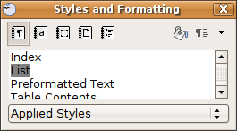
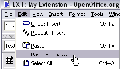
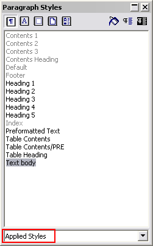
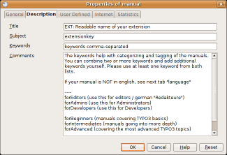
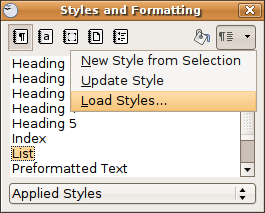

Extension
Key:
Language:
Keywords:
Copyright
2000-2010,
This document is published under the Open Content License
available from http://www.opencontent.org/opl.shtml
The content of this document is related to TYPO3
-
a GNU/GPL CMS/Framework available from www.typo3.org
EXT: Readable name of your extension 1
Issues with Open Office documentation for TYPO3 12
HowTo: Update a manual to the new layout 13
HowTo: (alternative) Import the styles from another document 14
HowTo: Fix the Table Of Contents when it is empty 14
HowTo: Fix the Table Of Contents when a chapter is missing 14
Overview; What does it do? What problem is solved? Who is interested in this? Brief technical insight. Basically everything people need to know if they should go on with this extension.
Hit the F11 key to show the styles
If you use the current “doc_template” (version 1.2.7 and higher) you already see “List” in “Applied styles”/ (german: “Verwendete Vorlagen”)
For all who just upgrade d from an older version: See “List styles” and double click at “List” to use it, and switch back to “Used styles”
Use it: select some lines and double klick the List-style
Use the HowTo at page 13 “HowTo: Update a manual to the new layout”
No empty line between a header and a paragraph
No changes of the headers (font select box “Clear formatting”/ “Formatierung loeschen”)
Change special paragraph-styles to standard (with “Clear formatting”)
Update the Table of Contents with a right click (when you hover over the TOC-items you see the numbering)

Screenshots
are very much welcome for a visual impression.
This section will have a link in the EM, so therefore it's very important that it conveys this message.
Target group: Mostly Developers and administrators, but should be a non-technical and visual presentation.
This section is required and in some cases it basically tells it all.
Documentation of how to use the extension, how it works, how to apply it if it's a website plugin. A user manual.
Language should be non-technical, explaining, using small examples.
Examples: For the "News" plugin this would be a manual showing how to create the news-items, explaining the options etc.
Target group: Users, Administrators or Developers in that priority. Depends on the extension.
Possible subsections: FAQ
Describes how to manage the extension from a superuser point of view. That relates to Page/User TSconfig, permissions, configuration etc. which administrator level users have access to.
language should be non/semi-technical, explaining, using small examples.
Target group: Administrators
Possible subsections: FAQ
Technical information; Installation, Reference of TypoScript, configuration options on system level, how to extend it, the technical details, how to debug it.
language should be technical, assuming developer knowledge of TYPO3. Small examples/visuals are always encouraged.
Target group: Developers
Possible subsections: FAQ
You can produce subheadlines in a section using “Heading 4” or “Heading 5” (normally used for “Examples”)
Possible subsections: Reference (TypoScript)
|
Property: |
Data type: |
Description: |
Default: |
|---|---|---|---|
|
allWrap /+stdWrap |
wrap |
Wraps the whole item |
|
|
wrapItemAndSub |
wrap |
Wraps the whole item and any submenu concatenated to it. |
|
|
subst_elementUid |
boolean |
If set, all appearances of the string '{elementUid}' in the total element html-code (after wrapped in .allWrap} is substituted with the uid number of the menu item. This is useful if you want to insert an identification code in the HTML in order to manipulate properties with JavaScript. |
|
|
RO_chBgColor |
string |
If property RO is set (see below) then you can set this property to a certain set of parameters which will allow you to change the background color of eg. the tablecell when the mouse rolls over you text-link.
Syntax: [over-color] | [out-color] | [id-prefix]
Example: page = PAGE
page.typeNum = 0
page.10 = HMENU
page.10.wrap = <table border=1>|</table>
page.10.1 = TMENU
page.10.1.NO {
allWrap = <tr><td valign=top id="1tmenu{elementUid}" style="background:#eeeeee;">|</td></tr>
subst_elementUid = 1
RO_chBgColor = #cccccc | #eeeeee | 1tmenu
RO = 1
}
This example will start out with the table cells in #eeeeee and change them to #cccccc (and back) when rolled over. The “1tmenu” string is a unique id for the menu items. You may not need it (unless the same menu items are more than once on a page), but the important thing is that the id of the table cell has the exact same label before the {elementUid} (red marks). The other important thing is that you DO set a default background color for the cell with the style-attribute (blue marking). If you do not, Mozilla browsers will behave a little strange by not capturing the mouseout event the first time it's triggered. |
|
[tsref:(cObject).TEST]
Here you would show an example of the stuff from the reference or so:
page = PAGE page.typeNum = 0 page.10 = TEXT page.10.value = HELLO WORLD
A full point-a-to-b-to-c walk-through of an application of the extension. Include screendumps.
Language: As tutorials are...
Target group: Whatever fits.
Use this section for important warnings about bugs, problems or performance issues. This is where you should explain shortcomings of the extension, so people are properly warned. Be honest.
Target group: Mostly Developers
Alternativley if you like: User contributions to YOUR manual: (don't use the forge-wiki-page because nobody would find it, the central wiki is wiki.typo3.org)
A wish list of things you want to add or fix. This includes smaller problems/bugs which are best described as a todo item.
Visions for what the extension could become with more development.
Create a file "ChangeLog" (see e.g. the extension "cal" as example) to inform about changes or
Use this section to document all the changes through the versions.
Alternative to the following list: ChangeLog online (point this link to YOUR extension)
|
Version |
Changes: |
|---|---|
|
0.1.0 |
Added / Changed/ Caught error |
There are a few important points to make about writing documentation for TYPO3 in Open Office. Please makes sure to follow these.
When you insert images you can either:

Make
a copy/paste from eg. Photoshop, but it's REALLY
IMPORTANT that you insert the image into Open Office by
the menu “Edit > Paste Special” and then select “Bitmap”.
If you don't do it in this way the image cannot be shown (since it
will not be stored as a PNG internally in the SXW file)
Alternatively you can use the traditional way “Insert > Graphics > From file” and insert an image from your harddrive. In particular use this if the image is photographic (JPG) since the internal storage as PNG is not good for photographs.
Generally please use copy/paste only for screendumps with large areas of similar color (good png-compression) and JPG-files for photographic images. Go for small images, 72 dpi, medium quality.
Use the paragraph style “Text body” for bodytext
Use “Heading 1” to “Heading 5” for headers. “Heading 1-3” will be recognized as “sections” on typo3.org. “Heading 4-5” is subheaders, where “Heading 5” is preferrably for “Examples”.
For code listings, use the style “Preformatted Text” (found under “HTML Styles”). For codelistings in tables there is a custom style called “Table Contents/PRE”.
This screenshot shows the only paragraph styles allowed in the documents. The ones grayed out are paragraph styles that are used by default for such as the index table or the footer. The others are the ones you are allowed to use.

You can make hyperlinks in the documents as absolute URLs. Use menu “Insert > Hyperlink”
There are three fields of meta-data you have to fill in. First of all go to “File > Properties...”.

In the “Description” screen you enter the title of the document. Extension manuals are prefixed “EXT: [extension title]”
In the “User defined” screen you enter your email address as the first field (named “Email” / ”Info 1”)
In the “User defined” screen you enter your full name as the second field (named “Author” / ”Info 2”)
Finally you should also insert the correct extension key in the text below the document title, but this is not a meta-data field, just regular text.
With these steps you get it very fast
Update the extension doc_template (maybe a new one is out)
Hit the F11 key to show the styles
>> Copy everything from your old manual except the title page and the table of contents <<
Delete contents from new manual but leave the title page and the table of contents there
Paste your content and check that formatting is correct and images are in place
Hint: When the header-styles are still in the old layout then clear and re-assign the new style
Update the page properties with your
extension key, e-mail-address, name, language, tagging.
In the
moment the language- and tagging-properties are not in use by the
TER, but findable by search.
Reload the table of content (right click update index table)
Insert your extension key below the document title
Ready.

(!)
In some old OpenOffice versions (e.g. 2.4) there's a bug: after the
import you need the HowTo “Fix the TOC”
Load your manual, then hit the F11 key to show the styles
Klick on the small arrow top-right
A select box appears , you klick at “Load Styles” and then “From File”
(!) Check all the boxes
Navigate to the “doc_template”/doc” folder and switch the file-type to .sxw “OpenOffice.org 1.0 Textdocument”
Open the manual.sxw, now you can use the new style!
Maybe the outline numbering is broken (german: “Kapitelnummerierung”).
Go to menu "Tools” > “Outline Numbering" and apply the missing "Heading" styles to the empty levels.
Update the TOC, ready.
You have changed the styling of a header. Clear the formatting of the header and re-assign the header-style
See the international portal for help: http://documentation.openoffice.org